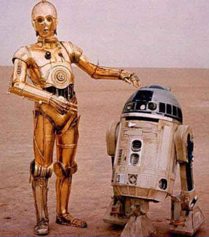
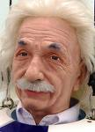

Tururut
 De: La Frikipedia, la enciclopedia extremadamente seria.
De: La Frikipedia, la enciclopedia extremadamente seria.
 Se cree que los robots que no hablan se comunican en base a chiflidos y tururuts, tal como los delfines
 Einstein después de ver a Cyberjesus
Tururut es un palíndromo (palabra que se lee para los dos lados). Esta palabra no tiene forma ni origen conocido exactamente, se le puede atribuir a un sinfín de eventos que pueden presentársenos a diario, por ejemplo al estar en el Mésenller cada vez que recibes un mensaje, un TURURUT te avisa, en el metro (Ciudad de México) un TURURUT significa: se van a cerrar las puertas.
El origen de ésta palabra se remonta a los 100 a.C. (antes de Chuck Norris), cuando ingenieros, físicos y demás científicos descubrieron un tipo de ondas producidas por sus creaciones que emitían dicho sonido.
En algunas ocasiones se le pronuncia como tururú, (cambio fonético debido a la orientación sexual de la persona o delfín que lo pronuncie), por lo que Real Academia Española no se ha decidido en qué término agregar a los diccionarios.
Leyendas del TURURUT
- Clase de física, los educandos en silencio y uno que otro durmiendo (Sofista), cuatro tios al fondo del salon haciendo un monton de cosas menos poniendo atención a la clase y de uno surge un TURURUT, cinco minutos después otro canta TURURUT, la maestra no dice nada, un chaval de adelante pide la hora, la maestra lo manda afuera de la clase.
- Albert Einstein en sus estudios respecto a los viajes en el tiempo, se baso en el Principio de Tururut, el cual enuncia que si pronuncias TURURUT empiezas con una T y terminas en otra T pero ya en otro momento, osea viaje en el tiempo que duro 2 segundos aproximadamente, bajo ese principio Einstein busco alguna forma de elongar el TURURUT y asi viajar en el futuro y de forma inversa regresar al pasado. Einstein quedo atrapado en un hoyo en el espacio-tiempo al olvidar pronunciar una letra intermedia, afortunadamente fue rescatado por Chuck Norris, aunque se cree que durante este viaje en el espacio-tiempo, Einstein presenció la pelea entre Cyberjesús y SATANAS II, por consecuente Einstein quedo loco.
- Dios hizo todas las cosas en el universo en seis días, en el séptimo día Dios vio su creación y al ver que ya no había nada por hacer un TURURUT salio de su pico y entonces decidió echar la weba.
Autor(es):
- Aque
- Chucho20
- Carlitox
- RuisuGd
- Generibot
Frikipedia 2005-2016, Licencia
GFDL 1.2 - Extraído por FrikiLeaks